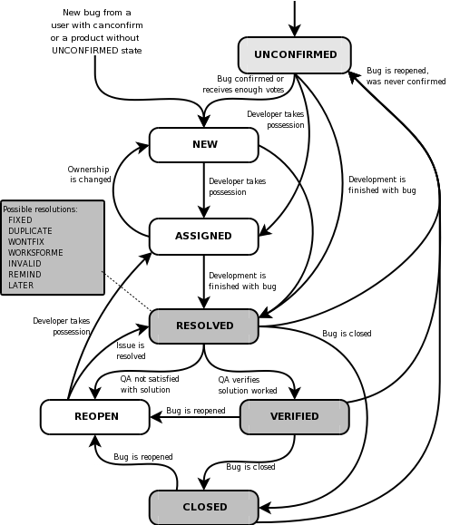

Issues¶
Learning outcomes
- To be a good team member within a project
- Use issues to communicate what needs to be done
- Assign yourself to issues to communicate what you are working on
- Convert requirements to issues
For teachers
Teaching goals:
- Find out which learners are comfortable with functions
Prior:
- How to keep track of what needs to be done in a project?
- How to signal to the team what needs to be done?
- How to prevent team members from working on the same thing?
- How would you define what an issue is?
- How do you call the webpage where a list of issues can be seen?
1. Why are issues important?¶
A good team member communicates. Here we show how to communicate to the rest of the team with minimal overhead.
- What needs to be done?
- Who is doing what now?
2. Issues¶
A bug-tracking database is not just a memory aid or ascheduling tool. It doesn 't make it easier to produce great software, it makes it possible to create great software.
Joel Spolsky
[Gunderloy, 2007]
An issue is a unit of work, or something that needs to be done.
All issues are stored in an issue tracker.
The issue tracker is a fundamental communication tool in
teams [Bertram, 2009]
In any project, you should create a shared "to-do" list,
such as an issue tracker [Wilson et al, 2017].
| English | Issue | Describe |
|---|---|---|
| This needs to be done! | Create an issue | Why and what needs to be done |
| I am on it! | Assign yourself to an issue | - |
| You are best to do this! | Assign someone else to an issue | Why you think the other is best to do it |
| Done! | Closing an issue | Why it is done |
| Nah, it is not done yet! | Re-opening an issue | Why it was not done |

The life cycle of a issue, from
[Bugzilla, 2009]
2.1. Issues that are duplicates¶
Sometimes, two issues describe the same problem.
This is called a duplicate.
Because duplicates are not uncommon,
there is an issue label called duplicate.
2.2. Issues with dependencies¶
Sometimes issues depend on other issues.
This is typically indicated with a depends issue label.
The learners' project has it too.
In the text write something like:
The hashtag (#) turns the #42 into a link to issue 42.
2.3. Issues based on requirements¶
Some issues originate from the requirements documents, as shown below.
In academia
In academia, instead of using a formal requirements document, you can use sentences from the 'Methods' section too.
Writing the 'Methods' section and issues goes hand-in-hand.
Example issue 'R1: Create testing parameter set'
The requirements documentation states:
| Requirement ID | Requirement Description | Acceptance Criteria | Test Cases |
|---|---|---|---|
| R2 | Create testing parameters | A parameter set can be created to be used in testing | The test parameter set must be a parameter set |
To do so, create a function called create_test_parameters in a file called parameters.py
The function needs no input arguments.
The function creates a parameter set with reasonably normal default settings.
The data type of the parameter set must be a class called Parameters,
but use a list
of strings if this is not specified yet.
Note the related requirent R2: 'check that parameters are well-formed'
Example issue 'R2: check that parameters are well-formed'
The requirements documentation states:
| Requirement ID | Requirement Description | Acceptance Criteria | Test Cases |
|---|---|---|---|
| R2 | Can recognize valid parameters | A valid parameter set can be recognized | Parameters (such as R1) must be recognized as valid, others as invalid |
To do so, create a function called are_parameters in a file called parameters.py
The function needs one argument, which is the value to determine if it is a parameter set.
The function returns True if the value is indeed a
valid/well-formed/correct parameter set and returns False otherwise.
Note the related requirent R1: 'Create testing parameter set'
Example issue 'R3: Read parameters from file'
The requirements documentation states:
| Requirement ID | Requirement Description | Acceptance Criteria | Test Cases |
|---|---|---|---|
| R3 | Read parameters from file | Parameters can be supplied as a file | The simulation uses the same parameters as specified in a parameters file |
To do so, create a function called read_parameters in a file called parameters.py
The function needs a filename as input and creates a dictionary
of parameter name to parameter values, such as {'initial_number_of_bacteria': '1000', 'duration': '1000 timesteps'}.
Create a test parameters file, e.g. test_parameters.csv to test that
the values read by read_parameters match those in the file.
Example issue 'R4: Create a test bacterium'
The requirements documentation states:
| Requirement ID | Requirement Description | Acceptance Criteria | Test Cases |
|---|---|---|---|
| R4 | Create a test bacterium | A bacterium can be created to be used in testing | The test bacterium must be a bacterium |
To do so, create a function called create_test_bacterium in a file called bacterium.py
The function needs no input arguments.
The function creates a bacterium with reasonably normal default settings.
The data type of the bacterium must be a class called Bacterium,
but use a list
of strings if this is not specified yet.
Example issue 'R5: check that a bacteria is well-formed'
The requirements documentation states:
| Requirement ID | Requirement Description | Acceptance Criteria | Test Cases |
|---|---|---|---|
| R5 | Can recognize a bacterium | A valid (in-memory) bacterium can be recognized | A bacterius (such as R4) must be recognized as valid, others as invalid |
To do so, create a function called is_bacterium in a file called bacterium.py
The function needs one argument, which is the value to determine if it is a bacterium.
The function returns True if the value is indeed a
valid/well-formed/correct bacterium and returns False otherwise.
Note the related requirent R4: 'Create a test bacterium'
3. Managing issues¶
For a fresh project, there are many things to do. It is not uncommon to have an 'issue manager' that keeps an overview of all issues.
4. Our project¶
In our project we use the following rules:
- Always work on an issue, create an issue if needed
- Issues are always based on the requirements document
- An issue can contain the assignment to add something to the requirements document
5. Exercises¶
5.1. Exercise 1: a typical issue lifecycle¶
Do the following in our student project:
- Create a test issue. In the text, write why you create that issue and what needs to be done
- Assign yourself to the issue
- Close the issue. In the text, write why you close that issue
5.2. Exercise 2: learners' project: create an issue¶
For the learners' project:
- create at least one issue for things that you think need to be done, based on the design document. Assign yourself to one issue
6. Discussion¶
Issues are useful to communicate:
- what needs to be done
- who is planning to do what
- what is already done
However, an issue tracker is not designed to communicate what is actively being worked on. For that, a kanban board is used instead.
7. References¶
[Bertram, 2009]Bertram, Dane. "The social nature of issue tracking in software engineering." University of Calgary (2009).[Bugzilla, 2009]Bugzilla (2009). Life Cycle of a Bug. Mozilla archive[Gunderloy, 2007]Gunderloy, Mike, ed. Painless project management with FogBugz. Berkeley, CA: Apress, 2007.[Wilson et al, 2017]Wilson, Greg, et al. "Good enough practices in scientific computing." PLoS computational biology 13.6 (2017): e1005510. Article